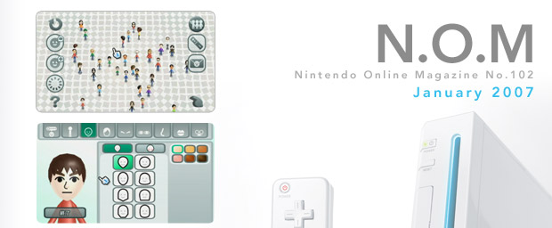
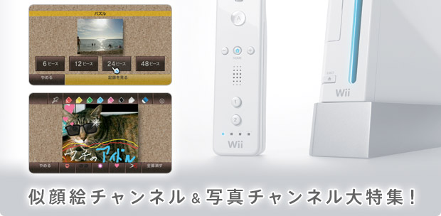
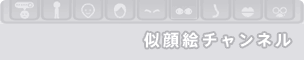
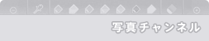

|   |
| 最近ちょっと気に入っているのが、Ｗｉｉ本体の電源を入れたときに登場するＷｉｉメニューで流れるBGMです。静かな音調の何気ないフレーズのくり返しなんですが、聞いていると不思議と落ち着くんですよね。読書などにピッタリ。ソフトを遊ばないときでもＷｉｉメニューのままにして楽しんでいます。 さて、2007年最初のN.O.MでレポートするのはＷｉｉに搭載された多彩なチャンネル機能、その一部です。今回は、似顔絵チャンネルと写真チャンネルをクローズアップ。ゲームだけではなく、いろんな形でＷｉｉにもっともっと触れてもらうための活用ガイドです。 似顔絵チャンネルの紹介コーナーでは似顔絵の名人に、上手にＭｉｉを作るポイントの数々を聞けました。必見です！ |
|  |
 |
| N.O.Mのバックナンバーページへ |